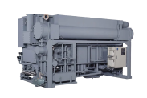

2024年
問題65 下の図は，蒸気熱源吸収冷凍機の冷凍サイクルを示したものである．図中のA，B，Cに対応する蒸気，冷水，冷却水の組合せとして，最も適当なものは次のうちどれか．
蒸気冷水冷却水
（1）Ａ Ｃ Ｂ
（2）Ｂ Ａ Ｃ
（3）Ｂ Ｃ Ａ
（4）Ｃ Ａ Ｂ
（5）Ｃ Ｂ Ａ
2024年
問題65 正解（3） 頻出度AAA
問題の図を再掲する．
Aは，吸収器で吸収熱を除去し，凝縮器で冷媒を液化するための「冷却水」，Bは冷媒の水を吸収して薄くなった吸収液（希溶液）を加熱して冷媒水を追い出すための「蒸気」，Cは蒸発器によって冷却される「冷水」である（2024-65-1 図参照）．

「新建築物の環境衛生管理」（平成31年3月31日 第1版第1刷）中196 図5-2-1（29） を基に作成
吸収冷凍機について以下にまとめた．

https://www.ers.ebara.com/product/absorption-cl/absorption-cl-rewraw.html
| 冷媒 | 水 |
| 吸収液 | 臭化リチウム（リチウムブロマイド）溶液．臭化リチウムは塩化ナトリウムと似た性質（潮解性）をもち，水をよく吸収する． |
| 蒸発器 | 冷媒である水を冷水チューブにスプレーし，水の蒸発熱で冷水を冷やす． 水が5℃程度で盛んに蒸発するように蒸発器の内部は高真空に保たれている． |
| 吸収器 | 吸収液を散布し蒸発した水冷媒を吸収する．発生する吸収熱を外部冷却水で除去． |
| 再生器 | 冷媒（水）蒸気を吸って薄くなった吸収液を外部の熱によって加熱し，冷媒を蒸発させ吸収液を再生する．外部の熱はボイラ蒸気や各種の排熱が利用できる． |
| 凝縮器 | 再生器からの冷媒蒸気を外部冷却水で凝縮させ水冷媒に戻す． |
主流の二重効用吸収冷凍機では高温，低温の再生器と熱交換器を持ち，外部から取り入れた蒸気のエネルギーを二段階で利用して熱効率を上げている．
吸収冷凍機は，蒸気圧縮型冷凍機と比べ，以下のような特徴がある．
1．使用する電力量が少ない．
2．真空で運転され，高圧ガス保安法の適用を受けない（運転に特別な資格不要）．
3．吸収冷凍機の熱源は都市ガスに限らない．LP ガス，石油，各種排ガスや高温水，低温水も熱源になるため，排熱回収に適する．
4．負荷変動に対し，容量制御性はよいが，起動の度に停止時薄められた吸収液から冷媒（水）をつくるためのウォームアップ時間を要するので，オン-オフ運転制御は省エネとならない．可能であれば台数分割し軽負荷時には一部の冷凍機を停止する．
5．振動や騒音が少ない．
6．蒸発圧縮冷凍機と比べ成績係数が低く，同じ冷凍能力なら排熱量が多くなって，冷却塔が大型となる（成績係数＝出力/入力なので，成績係数が小さいということは，出力が同じなら入力が大きいことを示す．したがって排熱量＝出力＋入力なので排熱量が大きくなる）．